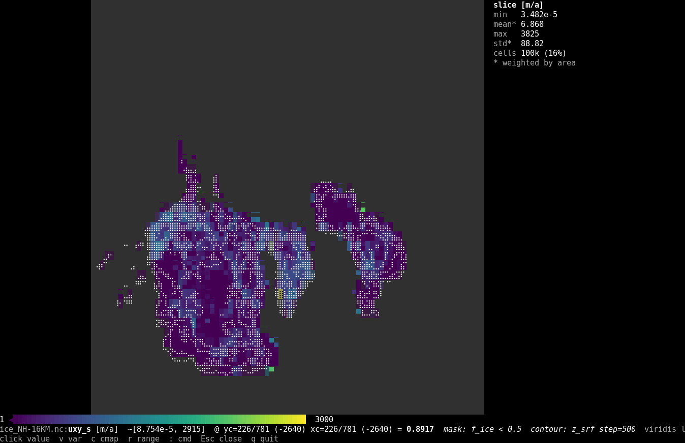

In any terminal, over ssh
nqv run/ on the login node opens the folder's files: arrows step through time and levels,
v picks a variable by a few letters, a click gives a cell's value and its series. Maps are drawn
with the terminal's image protocol where there is one (kitty, iTerm2, WezTerm, sixel), else with coloured
half-blocks, so it works in Terminal.app and under tmux.
One static binary, no libraries to load: copy it to ~/bin. Files are read a slice at a
time, only as much as the screen shows.
